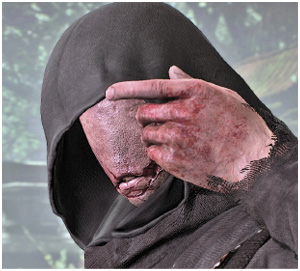
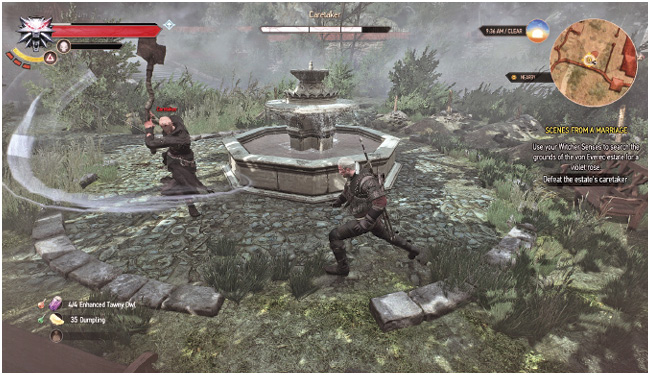
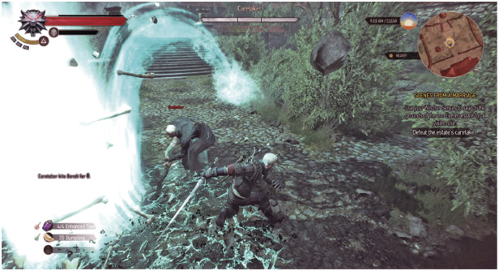

Objectives
Search the estate’s back garden using your Witcher Senses.
Defeat the estate’s caretaker.
TAKING CARE OF YOURSELF FIRST
The source of the digging isn’t a being to be trifled with, and you are encouraged to thoroughly prepare for a prolonged battle by brewing elixirs, prepping projectiles, using oil, and setting up your combat inventory before meditating, before venturing into the back garden.
 The Caretaker Remain on the upper walkway, and follow the trail of footprints and body marks to the back garden. Here you find the source of the digging sounds: a monstrous and grotesque form, an abomination created through black magic, now a guardian of the estate—the Caretaker! It hasn’t finished digging the hole to dump the remains of the other thief in yet. Without a sound (as it has no mouth) it stops and turns its shovel at you. The Caretaker must be killed before you can continue.

Defeating the Caretaker: The Abomination’s Attacks
The Caretaker has the following attacks and maneuvers:
Regeneration Strikes: Whenever he strikes you with his spade successfully, he regenerates a small amount of health. Simply avoid being struck for this, and the usual reasons!
Summoning Ghosts: After around three or more attacks, or when he suffers substantial damage, he invokes ghosts that shuffle toward him, allowing themselves to be destroyed and absorbed by the Caretaker, regenerating his health considerably. Stop this quickly by special positioning (see “Coaxing the Caretaker,” below), or by reaching the ghosts first and simply striking them with a single hit to dismiss them. As more ghosts are summoned (continuously for around 30 seconds), continue to look for ghosts (especially on your map) and race to prevent the Caretaker reaching them as quickly as possible while dismissing each with your sword.
Combination Attack (Spade): This is a powerful series of spade attacks the Caretaker can string together to form a devastating combo. If you’re caught in this, you can be killed easily. Do not try to attempt to parry or block; step out and away from this attack.
Special Attacks (General): These cause a large amount of damage and cover a large area around and in front of him. These are as follows:
Special Attack: Shovel Slam: The Caretaker raises his spade above his head and then slams it down into the ground, causing a wide, cone-shaped area to be bathed in attack energy; this causes massive damage to you, and knocks you down. Look for the Caretaker to raise his spade, and back away from the area. As the shovel becomes temporarily stuck in the ground after the energy dissipates, venture in to attack afterwards. Then leap away as soon as you see more energy starting to appear around him.

Special Attack: Charging Shovel: The Caretaker barges forward with his spade outstretched, racing forward around eight meters and causing massive damage and a knockdown if he strikes you during this time. Afterward, there is a brief recovery time, where you can strike back. Simply step to the side, or roll into or around the attack so the Caretaker runs past you. Then target and attack the foe during his recovery.
Impressive Immunity: The Caretaker is immune tow most Sign, Bomb, and crossbow bolt effects. He also immediately destroys any Yrden placed by you, making this especially ineffective.
Defeating the Caretaker: The Best Battle Tactics
Learning Patterns: In the Beginning: The Caretaker makes a slow but constant approach toward you, attempting his combo attack when close. These usually end with a Shovel Slam, in an attempt to knock you over.
Learning Patterns: In the Thick of It: When you manage to reduce the Caretaker’s health to the first of its three segments, and again when two-thirds of his health is lost, the Caretaker breaks away from the fight and summons ghosts from their graves within the garden. He slays and absorbs the ghosts’ energy, and this can easily bolster his health back up to maximum. These invoking phases last 30 seconds, so it is imperative you clear the ghosts away from the Caretaker to avoid prolonged combat . Afterward, the Caretaker begins attacking again. At two-thirds health, the Caretaker summons ghosts and then starts to employ the Charging Shovel attack exclusively. At one-thirds health, the Caretaker summons ghosts for a second time, then uses both the Shovel Slam and Charging Shovel attacks.
Coaxing the Caretaker: As the ghosts are summoned within the low stone walled section of the back garden, if you back away from the Caretaker during the combat phase, forcing the Caretaker to follow you up the steps and to the pathway where you met the Black Cat (or where the thief’s body is at the opposite end of the garden), you can quickly leave the Caretaker when he starts to summon ghosts, race into the garden, and mow down ghosts quickly before the Caretaker can reach them; at least until he follows you back into the garden. Area-of-effect attacks, like Igni, are particularly helpful in ridding an area of multiple ghosts. Then concentrate on any ghosts within the Caretaker’s path, preventing more health being sucked up by this foe. Don’t engage the Caretaker during this time; focus on the ghosts.
A Precise Attack: As the fight begins, approach but do not engage the Caretaker; stay directly outside the range of his combination attack. Watch for the start of the Shovel Slam, you can easily spot this as energy arcs out of his weapon. At this point, roll behind the Caretaker, and as the Caretaker tries to remove the shovel from the ground, batter him with sword attacks coated in Relict Oil.
Conclusion: Once the Caretaker performs his Charging Shovel attack, a simple sidestep, followed by sword attacks during his recovery time, is the key to success. Repeat the previous tactics mentioned until the conclusion of this battle.
The Caretaker’s Vulnerabilities
The Witcher® is a trademark of CD PROJEKT S. A. The Witcher game © CD PROJEKT S. A. All rights reserved. The Witcher game is based on a novel by Andrzej Sapkowski. All other copyrights and trademarks are the property of their respective owners. Learn more at thewitcher.com.
{kind=link}
{kind=link}